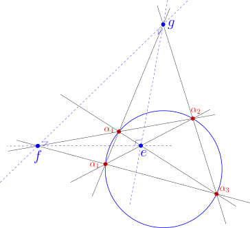
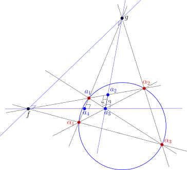

Two geometries, one hyperbola
Norman Wildberger’s Universal Hyperbolic Geometry (UHG) replaces the transcendental machinery of classical hyperbolic geometry — distance, angle, exponentials — with two purely algebraic quantities: quadrance \(q\) (a rational stand-in for distance) and spread \(S\) (a rational stand-in for angle). It also comes paired with chromogeometry, a framework in which the same plane can be measured with three different “colored” metrics — red (hyperbolic), blue, and green — each governed by its own quadratic form. The green metric, in particular, is built around the multiplicative unit curve \(xy = 1\): the standard hyperbola.
A new paper by John D. Coady finds an unexpected bridge between these two worlds (Coady 2026). Starting from nothing but a null quadrangle — four points sitting on the red geometry’s null conic — and using only red-geometry tools (perpendicularity, polarity, spread and quadrance), the paper derives a construction whose quadrances obey exactly the defining law of the green unit hyperbola:
\[q \longleftrightarrow \frac{1}{q}.\]
No green geometry is imported from outside. The multiplicative symmetry of \(xy=1\) falls straight out of red, null-point geometry on its own.
Setting the stage: the fully-right diagonal triangle
Take four distinct null points \(\alpha_1, \alpha_2, \alpha_3, \alpha_4\) and form their three diagonal points:
\[e = (\alpha_1\alpha_2)(\alpha_3\alpha_4), \quad f = (\alpha_1\alpha_3)(\alpha_2\alpha_4), \quad g = (\alpha_1\alpha_4)(\alpha_2\alpha_3).\]
A classical UHG result shows these three points form a fully-right diagonal triangle: each vertex is the pole of the opposite side, so \(e^{\perp} = fg\), \(f^{\perp} = ge\), and \(g^{\perp} = ef\). Every side is perpendicular to the line joining the other two vertices — the triangle is “fully-right” in all three corners at once.

Relabel the interior diagonal point \(e\) as \(a_3\), and let \(a_1 = \alpha_4\) be one of the original null points. From \(a_3\), the two perpendicular sides of the diagonal triangle — \(a_3g\) and \(a_3f\) — become the scaffolding for the next construction.
Building two complementary right triangles
Define two auxiliary points projectively:
\[a_2 \equiv (fa_1)\cdot(a_3g), \qquad a_4 \equiv (ga_1)\cdot(a_3f).\]
Because the diagonal triangle is fully-right, a short polarity argument shows that \(a_1a_2 \perp a_2a_3\) and \(a_1a_4 \perp a_3a_4\). In other words, this single construction produces two right triangles sharing a common vertex \(a_3\) and a common leg \(a_1a_3\): triangle \(a_1a_2a_3\), right-angled at \(a_2\), and triangle \(a_1a_3a_4\), right-angled at \(a_4\).

These are the complementary right parallax triangles of the title — “parallax” because each one is governed by Wildberger’s Right Parallax Theorem, which says that a right triangle with spreads \(0, S, 1\) has a single defined quadrance
\[q = \frac{S-1}{S}.\]
The main result: reciprocal quadrances
Let \(q_{23} = q(a_2, a_3)\) and \(q_{34} = q(a_3, a_4)\) be the quadrances along the shared vertex \(a_3\). The paper’s central theorem is remarkably clean:
\[q_{23}\, q_{34} = 1, \qquad \text{equivalently} \qquad q_{34} = \frac{1}{q_{23}}.\]
The proof is short and elegant. Since \(a_3a_2 \perp a_3a_4\), the angle at \(a_3\) in triangle \(a_2a_3a_4\) has spread exactly \(1\). Applying the Triple Spread Theorem — which reduces to \(a + b = 1\) whenever the third spread is \(1\) — to the two spreads \(S_2 = S(a_1a_3, a_3a_2)\) and \(S_4 = S(a_1a_3, a_3a_4)\) gives the complementary relation \(S_2 + S_4 = 1\). Feeding both spreads through the Right Parallax formula and simplifying, the two resulting quadrances multiply to exactly \(1\).
So the two “halves” of this construction — the triangle above \(a_3\) and the triangle below it — are locked together by a strict reciprocal law: whatever quadrance one has, the other is its multiplicative inverse.
An invariant quadrea of exactly one
This reciprocal law has an immediate and pleasing consequence. The triangle \(a_2a_3a_4\) is right-angled at \(a_3\) (spread \(1\) there), so its quadrea — the UHG area-analogue \(\mathcal{A} = q_1q_2S_3\) — simplifies to just the product of its two legs’ quadrances:
\[\mathcal{A}(a_2, a_3, a_4) = q_{23}\cdot q_{34}\cdot 1 = q_{23}\cdot\frac{1}{q_{23}} = 1.\]
No matter which null quadrangle you start with, this particular right triangle always has quadrea exactly \(1\) — a clean universal constant, in the same spirit as the invariants Coady catalogues elsewhere in his UHG work.
A self-dual fixed point
The map \(q \mapsto 1/q\) is an involution — applying it twice returns you to where you started — so it’s natural to ask about its fixed points. Algebraically \(q = 1/q\) forces \(q^2 = 1\), so \(q = \pm 1\). Checking against the Right Parallax relation rules out \(q=1\) as geometrically realizable here (it would force \(S = S-1\), a contradiction), leaving a single distinguished fixed point:
\[q = -1, \qquad S = \frac{1}{2}.\]
At this point \(q_{23} = q_{34} = -1\): the two complementary triangles become perfectly symmetric twins. Using the Projective Pythagoras theorem, the paper also shows that the hypotenuse quadrance \(q(a_2,a_4) = q + 1/q - 1\) is maximized along the negative branch precisely at this fixed point, attaining the value \(-3\). The self-dual configuration isn’t just symmetric — it’s an extremal point of the whole family.
Why this looks like the green hyperbola
The relation \(q_{23}q_{34} = 1\) says that every admissible pair of quadrances from this construction lies on the curve \(xy = 1\) — the defining equation of the “green unit circle” in Wildberger’s chromogeometry, the geometry built around diagonal quadratic forms and multiplicative structure. What makes this noteworthy is where it came from: nothing about the construction invoked green geometry. It was built entirely from red-geometry ingredients — null points, polarity, perpendicularity, complementary spreads — and yet it reproduces the green geometry’s defining multiplicative law.
The paper goes further, showing that the spread parameter \(S\) itself gives a rational parametrization of the hyperbola:
\[x = \frac{S-1}{S}, \qquad y = \frac{S}{S-1},\]
with \(xy=1\) automatically satisfied. This is reminiscent of — though entirely independent of — the classical Lobachevsky–Bolyai angle-of-parallelism formula \(\tan(\theta/2) = e^{-d}\), which links hyperbolic distance to exponential decay. Where the classical formula needs transcendental functions, the UHG construction gets an equivalent multiplicative structure using nothing but rational relations between null points.
A projective reading: cross-ratio and involutions
Since UHG quadrance can itself be understood as a cross-ratio invariant, the paper closes by placing the reciprocal map \(q \mapsto 1/q\) in its natural projective home: it is one of the classical anharmonic transformations generated by permuting four projective points. Under this lens, the reciprocal parallax symmetry isn’t a coincidence of formulas — it’s a visible trace of the underlying cross-ratio symmetry of the four null points the whole configuration was built from.
Takeaway
Starting from four null points and nothing more than perpendicularity and polarity, this construction produces a strict reciprocal law \(q \leftrightarrow 1/q\), a universal quadrea of \(1\), and a distinguished self-dual fixed point at \(q=-1\). Along the way, the standard multiplicative hyperbola \(xy=1\) — usually associated with an entirely different “color” of geometry — emerges organically from red null-point geometry alone. It’s a small but suggestive hint that UHG’s red, blue, and green geometries may be more tightly interwoven than their separate axiomatic definitions suggest.
This post summarizes results from J. D. Coady, “From Null Quadrangles to the Hyperbola xy = 1: Reciprocal Parallax Symmetry in Universal Hyperbolic Geometry” (2026), building on the foundational work of N. J. Wildberger on Universal Hyperbolic Geometry and Chromogeometry.